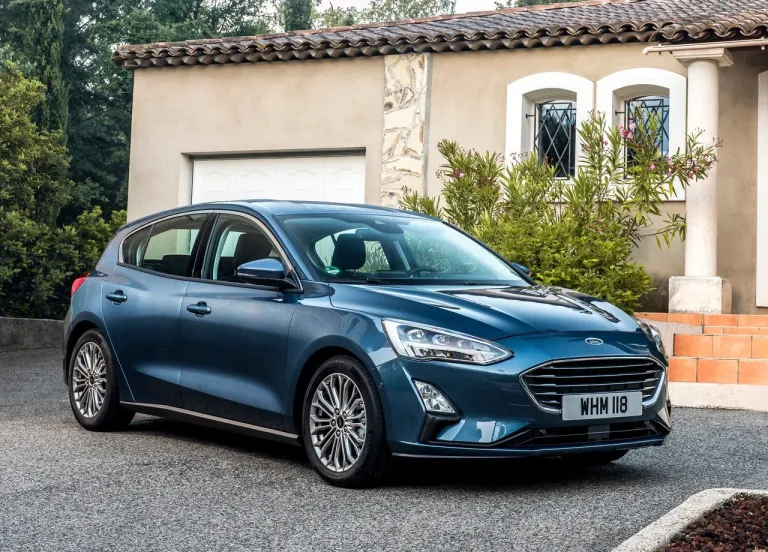

PRIMERA GENERACION
Nacido como un sucesor del Escort, el Ford Focus no es un modelo cualquiera en la historia de la marca norteamericana. Desarrollado por Ford Europa, fue una de las obras de la marca en Alemania, precisamente concebido para la planta de Saarlouis. El modelo del óvalo nació con el objetivo de ser uno de los últimos sucesos del siglo XX, con un estilo atrevido, que cautivó rápidamente a usuarios ávidos de un producto diferente y moderno de todo el mundo, lo que lo convirtió en un suceso prácticamente global

A la Argentina llegó en 1999, y se produjo en variante hatch de 5 puertas, o sedán de cuatro. Claro que renovar a un modelo tan bien concebido (tengamos en cuenta que este auto reemplazó al Escort, con la diferencia conceptual que existía entre ambos) resulta por demás complicado
SEGUNDA GENERACION
La segunda generación de Focus llegó al mercado Europeo a fines del 2004, con líneas mucho menos atrayentes: mucho más aburrido, sin los pliegues tan característicos de la primera serie.
La segunda generación se conoció en Argentina con su rediseño de media vida. Al sedán se lo denominó Focus EXE. Localmente en cambio se escogió por producir desde 2008 a la segunda generación conocida en Europa, aunque llegó con su rediseño de media vida: se retrasó tanto su llegada que cuando se presentó ya lucía en cierta forma desactualizado. Durante un par de años, hasta 2010, se produjeron en Pacheco ambas generaciones de Focus.
TERCERA GENERACION
La tercera generación se presentó en Europa en 2010. Tres años más tarde comenzó a producirse en Pacheco.

La evolución presentaba un diseño mucho más moderno y musculoso, lo que daba un aspecto visual de mayor deportividad, aunque en detrimento del espacio interior. A pesar de todo esto, en materia tecnológica agregaba numerosos items, que no tardaron en llegar al continente americano. Y lo decimos porque el Focus III, al igual que el original, se produjo tanto en la planta de Hermosillo, México, como en la bonaerense de General Pacheco. En ambos casos con dos de sus carrocerías, de cinco o cuatro puertas.
TERCERA GENERACION RESTILYNG
En 2015 llegó su rediseño frontal. Un diseño que mantenia el concepto del focus 3 pero un poco mas actualizado y manteniendo la linea del Kinetic desing visto en el fiesta 2014

En Argentina el Focus de tercera generación comenzó a ser producido a mediados de 2013, incorporando diversas mejoras que no habían sido tenidas en cuenta en la versión anterior, entre ellas dispositivos de seguridad pasiva y activa.
CUARTA GENERACION (NO LLEGO A ARGENTINA)
La cuarta generación se presentó en 2018. A pesar de ello la cuarta generación del Focus fue concebida en Europa, y comercializada allí junto a otros mercados, incluyendo el de China, una de los principales motores del modelo en la actualidad
Sin embargo Ford tiene en mente cerrar la planta alemana de Saarlouis, cuna global del Focus, y lo que es peor: se ha dado a entender que el modelo no sobrevivirá a 2025, al menos en Europa. Una nueva generación podría ser concebida para China, pero por el momento poco se adelantó